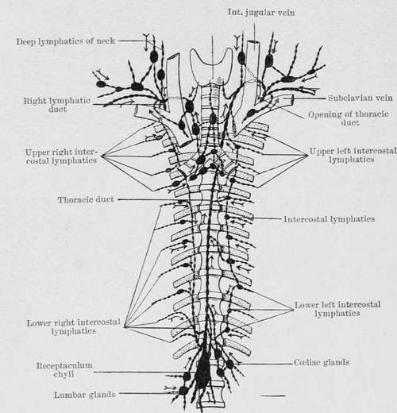

Lymphatic Infection
Description
This section is from the book "Cancer And Other Tumours Of The Stomach", by Samuel Fenwick. Also available from Amazon: Cancer and other tumours of the stomach.
Lymphatic Infection
The epithelial offshoots from a cancerous tumour penetrate the surrounding structures in the direction of the least resistance, and therefore soon find their way into the spaces in the connective tissue which constitute the radicles of the gastric lymphatics. After gaining an entrance to the lymph stream the cells are gradually swept onwards until they are arrested in the nearest lymphatic gland, when they undergo multiplication and reproduce the structure of the original tumour. Subsequently the efferent vessels of the gland become in their turn the means of transmitting the disease to its neighbour, and thus the process goes on until the whole lymphatic system is infected. In order to gain a clear conception of the various routes by which such a generalisation is brought about, it is necessary to bear in mind the general arrangement of the gastric lymphatics and of those of the surrounding viscera.
The Lymphatics of the Stomach commence in the mucous coat, and thence follow the blood-vessels to the subserous tissue. Some pursue an upward course towards the lesser curvature, others pass downwards to the greater curvature, while others again run across the fundus to the gastro-splenic omentum. In this way three principal groups of vessels are formed-the superior gastric, the inferior gastric, and those belonging to the fundus, or the left gastric lymphatics as they are sometimes called.
The Superior Gastric Lymphatics follow the course of the coronary vein along the small curvature between the layers of the lesser omentum. After passing through the superior gastric glands they turn backwards near the cardiac orifice and enter the coeliac glands. The Inferior Gastric Lymphatics direct their course towards the pylorus in company with the right gastro-epiploic vessels, and after passing through the inferior gastric glands and joining the lymphatics from the upper duodenum they pass between the pylorus and the pancreas to the cceliac glands.
The Left Gastric Lymphatics accompany the vasa brevia between the folds of the gastro-splenic omentum and terminate in the glands at the hilus of the spleen. There are also several lymphatics which run directly from the pylorus to the hepatic glands in the lesser omentum.
The Lymphatic Glands of the Stomach consist of two groups, the superior and the inferior.
The Superior Gastric Glands are usually five or six in number, and are situated along the upper margin of the organ between the layers of the gastro-hepatic omentum. They receive the superior gastric lymphatics, and their efferent ducts pass in the manner already described to the cceliac glands.
The Inferior Gastric or Gastro-epiploic Glands, seven or eight in number, lie between the folds of the large omentum along the great curvature. They receive the inferior gastric lymphatics and also those of the omentum. Their efferent vessels empty themselves into the cceliac glands.
The Cceliac Glands, about twenty in number, are clustered around the cceliac axis in front of the aorta and above the origin of the superior mesenteric artery. They receive the efferent vessels of the superior and inferior gastric, splenic and pancreatic glands, and some of those of the hepatic glands. Their ducts join the intestinal lymphatic trunks and open into the receptaculum chyli.
Fig. 28. - Diagram of the lymphatics of the stomach. (C. H. Leaf.).
The Mesenteric Glands lie between the layers of the mesentery, and number from one hundred and fifty to two hundred. Their efferent vessels unite to form one or more trunks (intestinal lymphatic trunks), which after receiving the efferent vessels of the mesocolic glands open with the ducts of the cceliac glands into the receptaculum chyli.
The Sacral and Lumbar Glands are situated respectively in the hollow of the sacrum and upon the fronts and sides of the lumbar vertebrae. Their efferent vessels enter the receptaculum chyli.
The Lymphatic Vessels of the Liver consist of a superficial and a deep set. The former ramify beneath the peritoneal investment, and partly converge to the diaphragm and enter the anterior mediastinal glands, and partly towards the anterior margin of the organ on their way to the hepatic or cceliac glands. The deep vessels accompany the branches of the portal and hepatic veins, and are directed respectively into the hepatic glands and the receptaculum chyli.
The Lymphatics of the Spleen and the Pancreas usually unite and enter the cceliac glands.
The Diaphragmatic Lymphatics follow the blood-vessels and terminate anteriorly in the internal mammary and anterior mediastinal glands, and posteriorly, in the posterior mediastinal glands.
The Anterior Mediastinal Glands lie behind the sternum. They receive the lymphatics of the antero-median portion of the diaphragm and those from the convex surface of the right lobe of the liver. Their efferent ducts pass upwards to the superior mediastinal glands.
The Superior Mediastinal Glands lie in front of the upper part of the pericardium, the arch of the aorta, and the left innominate vein. Their efferent vessels pass along the sides of the trachea to join the thoracic duct or the right lymphatic duct.
The Posterior Mediastinal Glands are placed in the posterior mediastinum along the course of the aorta. They receive lymphatics from the oesophagus, from the posterior part of the diaphragm, and from the right border of the liver. Their efferent vessels pass chiefly into the thoracic duct, but some enter the bronchial glands.
The Receptaculum Chyli lies between the aorta and the right crus of the diaphragm upon the body of the second lumbar vertebra. It receives the efferent vessels of the lumbar and cceliac glands, the intestinal lymphatic trunks, and some of the hepatic and gastric lymphatics. From it springs the thoracic duct, which enters the thorax by the aortic opening of the diaphragm, runs up the posterior mediastinum, and, leaving the chest at the superior opening on the left side, enters the junction of the left internal jugular and subclavian veins.
Fig. 29.-Diagram of the thoracic duct and its tributaries. (C. H. Leaf.).
Continue to: